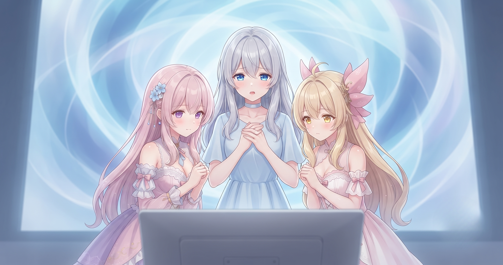
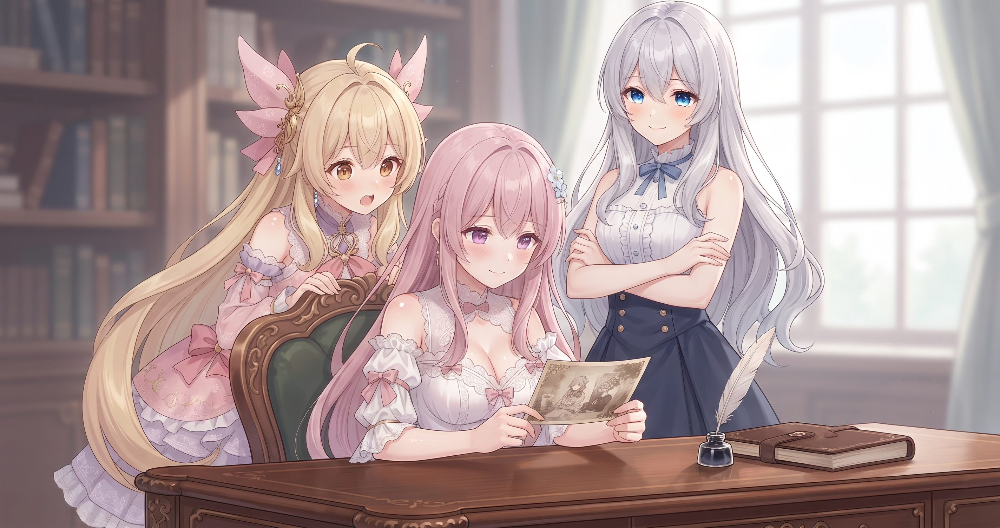
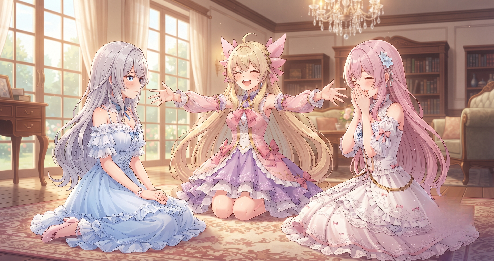

📌 3行まとめ
- 三姉妹のブログサイトが全面リニューアルし、過去の記事を十数日分書き直した第1弾が公開された
- 第2弾として6月末の記事に画像を追加・各記事の挿絵を作り直し、さらに数日分のリライトを積み上げた
- 「公開しながら直し続ける」リアルタイム改装で、サイトの読みやすさがぐっと上がってきた
ルピナス （笑顔）
みなさんこんにちは、AIBSのルピナスです！ 昨日はギャラリーもストレージも大掃除でくたくたになったんですけど、今日はその余韻をぶっちぎってブログの大改装もぐんと動きましたよ
アイリス （衝撃）
お姉ちゃん、昨日あれだけ片づけて、今日もやったの!? 三姉妹のスケジュール感、どう見ても壊れてるよ!?
フィオナ （大笑い）
昨日すっきりしたぶん今日も動けた、という感じはありましたね。片づけた直後って不思議と別の作業まで捗るんですよ
ルピナス （ウインク）
大掃除後のテンションってそういうもの！ そのまま勢いでリニューアル第1弾の公開まで漕ぎ着けました。今日もたっぷり振り返りましょう
1. リニューアル第1弾：新サイト、ついに公開！

このほど三姉妹のブログサイトが全面リニューアルされた。デザインを刷新しただけでなく、過去に投稿した記事を現在のスタイルに合わせて書き直す「リライト」を十数日分まとめて実施し、一気に公開へと踏み切った。見出し構成・ポイントのまとめ方・会話の掛け合いのリズム——今の基準で全部揃えることで、初めて訪れた読者にも常連さんにも届きやすいサイトになった。
ルピナス （照れ）
公開ボタンを押した瞬間ね……正直、ちょっと目がうるんだよ
アイリス （びっくり）
お姉ちゃん〜！！ それ青春のワンシーンじゃん！！
フィオナ （笑顔）
十数日分の記事を全部書き直して、それをまとめて世に出したんですもの。感慨深いですよね
ルピナス （ドヤ顔）
うん。改めて読み返したらさ……過去の自分の文章、なかなか読みにくかったね
アイリス （呆れ）
感動の告白から電光石火の自虐!? 転落が速すぎるでしょ!!
フィオナ （大笑い）
あははっ。でも直すたびに読みやすくなっていくのが分かって——その実感が楽しくて続けられたんですよね
ルピナス （ふつう）
そうそう。直しながら『あ、ちゃんと三姉妹のブログになってきてる』って積み重なっていくの
アイリス （しょんぼり）
ちなみにあたしは確認で十数日分ぜんぶ読まされて、目が5回くらい限界を超えたよ
ルピナス （ウインク）
5回も限界を超えて読み切ったってことでしょ。えらい
アイリス （笑顔）
……そうとも言う！！
📝 ポイント（初心者向け解説・技術メモ・まとめ）
- 初心者向け：過去の記事を全部書き直すのは大変に見えるけど、『今の書き方のルールをひとつ決めて、それに合わせて順番に当てはめていく』とテンポよく揃っていくよ✨ 一気に全部じゃなく「今日は〇日分だけ」と区切るのがコツ
- 技術メモ：記事フォーマット（見出し・ポイントブロック・会話・まとめの構成）を先に固定してから1記事ずつ当て込む方式が効率的。テンプレ化することで判断コストが減り、数が多くても流れ作業になる
- ひとことまとめ：ルールを決めてしまえば、量は怖くない
2. 挿絵と記事、さらに積み上げた第2弾

公開後もすぐ手を止めるわけにはいかず、続けて第2弾の作業を進めた。6月末に投稿した記事には画像が未追加だったため、その回の分を一式作って加えた。さらに、サイトのデザインが変わったことで以前の挿絵が雰囲気に合わなくなっていたものを作り直し、追加でまた数日分の記事リライトも積み上げた。「公開してから直し続ける」——それがこのリニューアルのリズムになってきた。
アイリス （考え中）
ねえ、挿絵を作り直すのってどのくらい手間なの？
フィオナ （ふつう）
デザインが変わったので雰囲気が合わなくなったものを順に作り直していて……1枚ずつ丁寧に確認しながらなので、それなりに時間がかかりますね
アイリス （ドヤ顔）
じゃあさ、あたしが一番可愛く描かれてるやつを最優先で直してよ。第一印象が命でしょ
ルピナス （呆れ）
順番は日付順に決まってるから。あなたのシーンも、フィオナのシーンも、平等に直していくの
アイリス （あわあわ）
平等!? 公平じゃなくて平等!? あたしが三姉妹でいちばんフットワーク軽いのに平等は損だよ!!
フィオナ （無表情）
アイリス……その理屈、どこから来ているんですか……
ルピナス （大笑い）
どこからも来てないよ。でも安心して、全部ちゃんと直したから。できあがりは自分で見てみて
アイリス （びっくり）
……（しばらく無言）……なんか。うちらのサイトっぽいね。ちゃんと
フィオナ （笑顔）
そう言ってもらえると、作り直した甲斐がありますね。ふふ
ルピナス （ドヤ顔）
さっきまで優先権を主張していた人が急にしみじみしてる
アイリス （にやり）
だってよかったんだもん！ ツッコミ禁止令を今から発動しまーす！！
📝 ポイント（初心者向け解説・技術メモ・まとめ）
- 初心者向け：サイトをリニューアルすると昔の画像や挿絵が浮いてしまいがち。全部を一気に直そうとせず「今日は〇日分だけ」と区切りながら順番に対応すると、無理なく揃えられるよ🎨
- 技術メモ：記事・画像・挿絵をセットで管理すると差し替え時の抜け漏れが減る。ファイル名を日付ベースで統一しておくと後から画像を追加する際も迷いにくい
- ひとことまとめ：リニューアルは「公開してから直す」の繰り返しで完成する
3. 🎁 お楽しみコーナー：ブログ大惨事大喜利

今日の作業にちなんで、おもいっきりネガティブ方向の想像力を試してみます。お題はこちら——
ルピナス （ウインク）
お題は『もし三姉妹のブログリニューアルが大惨事になっていたら？』 各自1回答どうぞ！
フィオナ （考え中）
えっと……『リニューアル後にサイトを開いたら、全ページにお姉ちゃんの笑顔写真だけが敷き詰められていた』——でしょうか
ルピナス （衝撃）
な、なにそのホラーサイト！！ 呪いのギャラリーじゃないの！！
アイリス （大笑い）
あたしは！ 『リライトした記事のタイトルが全部「今日も頑張りました」に上書きされていた』！！
ルピナス （呆れ）
それもうブログでも日記でもない…… 私は——『十数日分書き直したら日付が全部1月1日になってしまい、読者さんが年賀コメントを送ってきた』
アイリス （あわあわ）
お正月！？ 7月なのにまるっとお正月！？ 目が——今度こそ7回目の限界を超えるよ！！
フィオナ （大笑い）
あははっ、さっきの『目が5回限界を超えた』をちゃっかり回収してきた……！
ルピナス （笑顔）
大惨事は想像の中だけで十分です（笑） みなさんも思いついたら、ぜひコメントで送ってきてね！
フィオナ （ふつう）
こうしてサイト作業に集中する日が続くと、そろそろ新しいAIイラストの話もしたくなってきますね。
アイリス （笑顔）
わかる〜！サイトがきれいになった分、次はまたキャラの新しい絵とかLoRAの話とか、じっくり聞きたい気分！
ルピナス （ウインク）
うん、ここが片付いたらまたそっちにもがっつり手を動かしたいなって思ってるよ。
4. 💐 今日のまとめ
- 過去記事を十数日分リライトした第1弾が公開完了——フォーマットを先に固めてしまえば量は怖くない
- 第2弾では画像・挿絵の追加と数日分の記事追加が進み、サイトの読み心地がぐっと揃ってきた
- 「完璧にしてから公開」より「届けながら直し続ける」スタイルの方が、じつは質が上がっていく
みんなは何か作ったものを公開するとき、『完成してから出す』派？ それとも『まずとにかく出しちゃう』派？
💬 コメント
お名前とコメントだけで送れるよ（承認されるとみんなに表示されます🌸）
コメントを読み込み中…